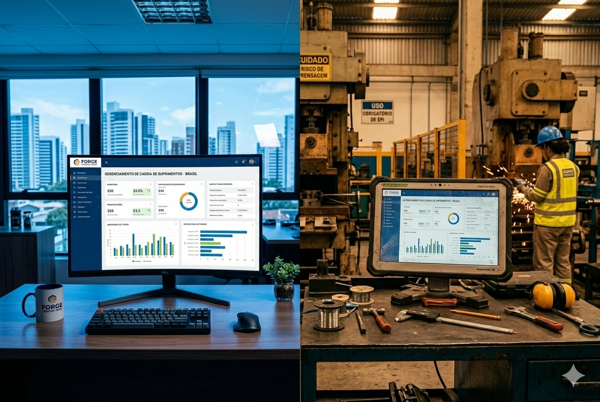

Estratégia Industrial
A Indústria que Não Vende Direto Está Perdendo Margem — e Talvez Nem Saiba
O modelo que funcionou por décadas está quebrado. A inadimplência do varejo bateu recorde e a margem encolhe. O D2C é a saída.
Artigos, casos de uso e insights sobre ERP industrial, gestão de produção e digitalização do chão de fábrica.

O modelo que funcionou por décadas está quebrado. A inadimplência do varejo bateu recorde e a margem encolhe. O D2C é a saída.

Comparativo transparente entre duas abordagens diferentes para o ERP industrial. Entenda qual faz mais sentido para o seu perfil.

As perguntas essenciais que revelam se um fornecedor de ERP está preparado para a realidade do chão de fábrica.

Caso real de uma metalúrgica de médio porte que digitalizou a operação e cortou desperdício em 5 meses.

Os padrões que separam implementações bem-sucedidas dos projetos que viram pesadelo — e como não repetir os erros.

Processo estruturado de avaliação que cabe em 60 dias, sem consultoria externa, e revela problemas antes da assinatura.

Menos hype e mais realidade sobre o que a digitalização industrial significa para PMEs brasileiras.

Os sintomas silenciosos da falta de rastreabilidade — e quanto isso custa por mês sem você perceber.

Todos os custos envolvidos na contratação de um ERP industrial — os visíveis e os que ninguém conta.

Análise honesta dos três ERPs mais procurados por PMEs industriais brasileiras.

Prós, contras e mitos sobre ERPs cloud para o ambiente industrial. O que realmente muda na prática.

Por que a maioria dos ERPs falha no chão de fábrica não é falta de funcionalidade — é falta de usabilidade.

O que muda, o que fazer agora e como o seu ERP precisa se adaptar à reforma tributária.

Os custos invisíveis que se acumulam quando a operação industrial roda sem sistema integrado.

Guia prático para iniciar a jornada IoT na sua fábrica com investimento mínimo e retorno rápido.

A diferença real entre MES e ERP industrial — e por que a maioria das PMIs não precisa dos dois.

Como o mercado de ERP industrial criou uma estrutura de preços que penaliza quem mais precisa.

As obrigações fiscais que estão mudando e como se preparar sem pânico.

Como fazer o operador de produção adotar o sistema sem resistência e sem treinamento formal.

A diferença entre configurar e modificar o ERP — e por que essa decisão errada custa milhões.

Entenda por que ERPs tradicionais falham no chão de fábrica e como essa confusão custa caro.
Nenhum artigo encontrado nesta categoria.